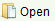
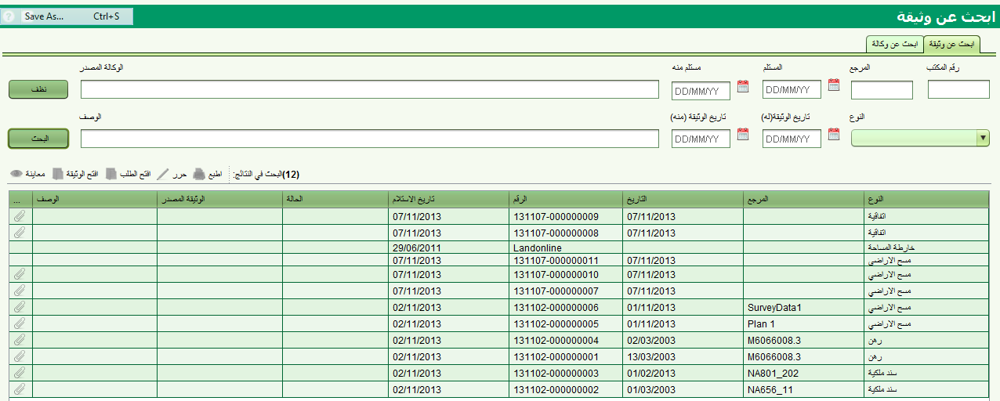
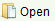

 يمكن استخدام قائمة الادوات لفتح صورة عن الوثيقة اذا كانت مرفقة معها.
لتحرير تفاصيل الوثيقة اضغط
تسمح شاشة البحث عن وثيقة بالعثور على الوثائق المطلوبة للمعاينة والتحرير. يمكن الوصول الى شاشة البحث من خلال القائمة الرئيسية : البحث – البحث عن وثيقة

يمكن البحث عن وثيقة من خلال عدة معايير مثل : رقم سولا, النوع, تاريخ الاستلام (من تاريخ الى تاريخ), تاريخ الوثيقة (من تاريخ الى تاريخ) , المصدر او الوصف. البيانات المسموحة لكل حقل من حقول البحث كما يلي :
لمعاينة التفاصيل التي تم ادخالها عن الوثيقة , اختر الوثيقة من نتائج البحث ثم اضغط  زر "عرض" من قائمة الادوات.
زر "عرض" من قائمة الادوات.
 يمكن استخدام قائمة الادوات لفتح صورة عن الوثيقة اذا كانت مرفقة معها.
لتحرير تفاصيل الوثيقة اضغط  toolbar button.
يمكن تعديل تفاصيل الوثيقة كما يمكن تعديل صورة المرفقات.
toolbar button.
يمكن تعديل تفاصيل الوثيقة كما يمكن تعديل صورة المرفقات.
 حتى الان لم يتم تفعيل هذا الزر.
لطباعة وثيقة, افتح مرفق الوثيقة ثم اطبع الوثيقة باستخدام خيارات قائمة الطباعة من مستعرض الوثائق.
حتى الان لم يتم تفعيل هذا الزر.
لطباعة وثيقة, افتح مرفق الوثيقة ثم اطبع الوثيقة باستخدام خيارات قائمة الطباعة من مستعرض الوثائق.
الوكالة هي وثيقة قانونية تخول شخص (محامي) بالتصرف نيابة عن شحص اخر (المخول) للقيام باعمال خاصة , تجارة او بعض الشؤون القانونية. يمكن تسجيل الوكالة في سولا وربطها بالطلب لتبرير الاعمال التي يقوم بها المحامي بالنيابة عن المخول
يمكن البحث عن وكالة مسجلة من خلال شاشة البحث عن وثيقة الا ان صفحة الوكالة تعطي خيارات اضافية للبحث مثل اسم المحامي او الشخص المخول .
نتائج البحث في الحالتين تعرض الوثائق الحالية والتاريخية (مثلا الملغاة) الا ان نتائج البحث لا تعرض الوكالات التي لم يتم تسجيلها. للبحث عن الوكالات قيد العمل استخدم شاشة البحث عن طب لتحديد الوثائق باستخدام الرقم المرجعي
انظر ايضا